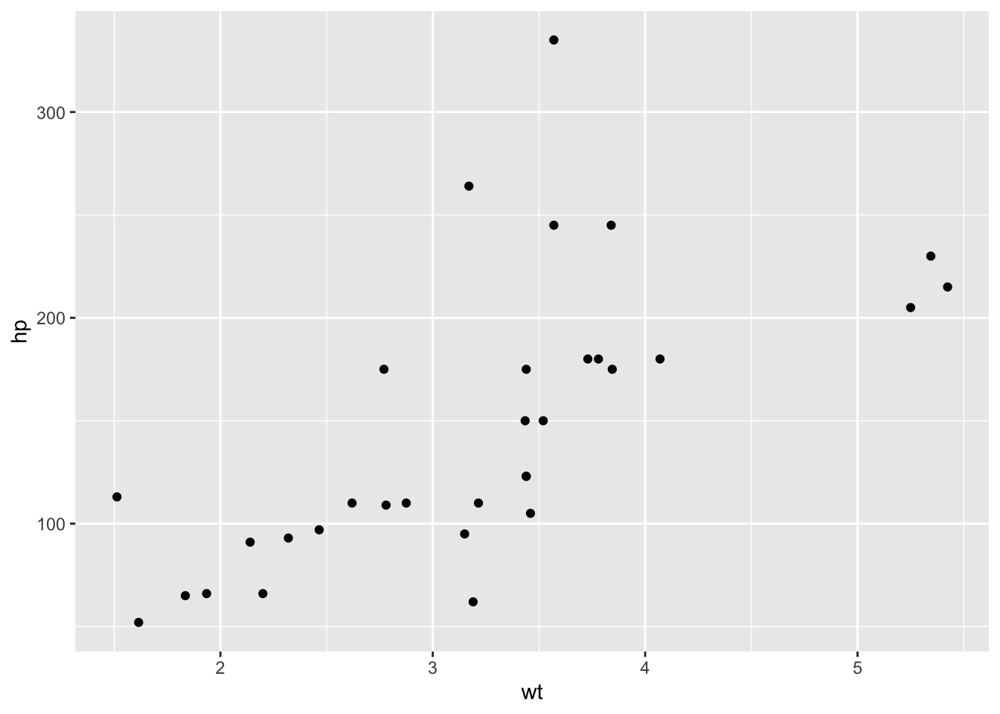

#| label: fig-margin
#| fig-cap: "MPG vs horsepower, colored by transmission."
#| column: margin
#| message: false
library(ggplot2)
mtcars2 <- mtcars
mtcars2$am <- factor(
mtcars$am, labels = c('automatic', 'manual')
)
ggplot(mtcars2, aes(hp, mpg, color = am)) +
geom_point() + geom_smooth() +
theme(legend.position = 'bottom')Introduction
This document demonstrates the use of a number of these page layout features to produce an attractive and usable document inspired by the Tufte handout style and the use of Tufte’s styles in RMarkdown documents [@xie2018]. The Tufte handout style is a style that Edward Tufte uses in his books and handouts. Tufte’s style is known for its extensive use of sidenotes, tight integration of graphics with text, and well-set typography. Quarto1 supports most of the layout techniques that are used in the Tufte handout style for both HTML and LaTeX/PDF output.
---
title: "An Example Using the Tufte Style"
author: "John Smith"
format:
html: default
pdf: default
# places footnotes and cited sources in the margin
# other layout options (for example placing a
# figure in the margin) will be set on per element
# in examples below
reference-location: margin
---These layout features are designed with two important goals in mind:
- To produce both PDF and HTML output with similar styles from the same Quarto document;
- To provide simple syntax to write elements of the Tufte style such as side notes and margin figures. If you’d like a figure placed in the margin, just set the option
fig-column: marginfor your code chunk, and we will take care of the details for you2.
If you have any feature requests or find bugs in this capabilities, please do not hesitate to file them to https://github.com/quarto-dev/quarto-cli/issues.
Figures
Margin Figures
Images and graphics play an integral role in Tufte’s work. To place figures in the margin you can use the Quarto chunk option column: margin. For example:
Note the use of the fig-cap chunk option to provide a figure caption. You can adjust the proportions of figures using the fig-width and fig-height chunk options. These are specified in inches, and will be automatically scaled down to fit within the handout margin.
Arbitrary Margin Content
You can include anything in the margin by places the class .column-margin on the element. See an example on the right about the first fundamental theorem of calculus.
We know from the first fundamental theorem of calculus that for \(x\) in \([a, b]\):
\[\frac{d}{dx}\left( \int_{a}^{x} f(u)\,du\right)=f(x).\]
Full Width Figures
You can arrange for figures to span across the entire page by using the chunk option fig-column: page-right.
ggplot(diamonds, aes(carat, price)) + geom_smooth() +
facet_grid(~ cut)
Other chunk options related to figures can still be used, such as fig-width, fig-cap, and so on. For full width figures, usually fig-width is large and fig-height is small. In the above example, the plot size is \(11 \times 3\).
Arbitrary Full Width Content
Any content can span to the full width of the page, simply place the element in a div and add the class column-page-right. For example, the following code will display its contents as full width.
::: {.fullwidth}
Any _full width_ content here.
:::Below is an example:
R is free software and comes with ABSOLUTELY NO WARRANTY. You are welcome to redistribute it under the terms of the GNU General Public License versions 2 or 3. For more information about these matters see https://www.gnu.org/licenses/.
Main Column Figures
Besides margin and full width figures, you can of course also include figures constrained to the main column. This is the default type of figures in the LaTeX/HTML output.
ggplot(diamonds, aes(cut, price)) + geom_boxplot()
Margin Captions
When you include a figure constrained to the main column, you can choose to place the figure’s caption in the margin by using the cap-location chunk option. For example:
ggplot(diamonds, aes(cut, price)) + geom_boxplot()
Sidenotes
One of the most prominent and distinctive features of this style is the extensive use of sidenotes. There is a wide margin to provide ample room for sidenotes and small figures. Any use of a footnote will automatically be converted to a sidenote.
If you’d like to place ancillary information in the margin without the sidenote mark (the superscript number), you can use apply the column-margin class to the element.
This is a span that has the class
column-margin which places it in the margin without the sidenote mark.References
References can be displayed as margin notes for HTML output. For example, we can cite R here [@R-base].
This feature depends upon link-citations to locate and place references in the margin. This is enabled by default, but if you disable link-citations then references in the HTML output will be placed at the end of the output document as they normally are.
Tables
You can use the kable() function from the knitr package to format tables that integrate well with the rest of the Tufte handout style. The table captions are placed in the margin like figures in the HTML output.
knitr::kable(
mtcars[1:6, 1:6], caption = 'A subset of mtcars.'
)| mpg | cyl | disp | hp | drat | wt | |
|---|---|---|---|---|---|---|
| Mazda RX4 | 21.0 | 6 | 160 | 110 | 3.90 | 2.620 |
| Mazda RX4 Wag | 21.0 | 6 | 160 | 110 | 3.90 | 2.875 |
| Datsun 710 | 22.8 | 4 | 108 | 93 | 3.85 | 2.320 |
| Hornet 4 Drive | 21.4 | 6 | 258 | 110 | 3.08 | 3.215 |
| Hornet Sportabout | 18.7 | 8 | 360 | 175 | 3.15 | 3.440 |
| Valiant | 18.1 | 6 | 225 | 105 | 2.76 | 3.460 |
A subset of mtcars.
Responsiveness
The HTML page layout is responsive- as the page width shrinks, elements will automatically adjust their position. Elements that appear in the margins will move inline with the content and elements that span the body and margin will automatically span only the body.
More Examples
The rest of this document consists of a few test cases to make sure everything still works well in slightly more complicated scenarios. First we generate two plots in one figure environment with the chunk option fig.show = 'hold':
p <- ggplot(mtcars2, aes(hp, mpg, color = am)) +
geom_point()
p
p + geom_smooth()

Then two plots in separate figure environments (the code is identical to the previous code chunk, but the chunk option is the default fig.show = 'asis' now):
p <- ggplot(mtcars2, aes(hp, mpg, color = am)) +
geom_point()
p
p + geom_smooth()

You may have noticed that the two figures have different captions, and that is because we used a character vector of length 2 for the chunk option fig.cap (something like fig.cap = c('first plot', 'second plot')).
Next we show multiple plots in margin figures. Similarly, two plots in the same figure environment in the margin:
p
p + geom_smooth(method = 'lm')
Then two plots from the same code chunk placed in different figure environments:
| Sepal.Length | Sepal.Width | Petal.Length | Petal.Width |
|---|---|---|---|
| 5.1 | 3.5 | 1.4 | 0.2 |
| 4.9 | 3.0 | 1.4 | 0.2 |
| 4.7 | 3.2 | 1.3 | 0.2 |
| 4.6 | 3.1 | 1.5 | 0.2 |
| 5.0 | 3.6 | 1.4 | 0.2 |
| 5.4 | 3.9 | 1.7 | 0.4 |
| 4.6 | 3.4 | 1.4 | 0.3 |
| 5.0 | 3.4 | 1.5 | 0.2 |
| 4.4 | 2.9 | 1.4 | 0.2 |
| 4.9 | 3.1 | 1.5 | 0.1 |
| 5.4 | 3.7 | 1.5 | 0.2 |
| 4.8 | 3.4 | 1.6 | 0.2 |
| 4.8 | 3.0 | 1.4 | 0.1 |
| 4.3 | 3.0 | 1.1 | 0.1 |
| 5.8 | 4.0 | 1.2 | 0.2 |


| Sepal.Length | Sepal.Width | Petal.Length | Petal.Width |
|---|---|---|---|
| 5.1 | 3.5 | 1.4 | 0.2 |
| 4.9 | 3.0 | 1.4 | 0.2 |
| 4.7 | 3.2 | 1.3 | 0.2 |
| 4.6 | 3.1 | 1.5 | 0.2 |
| 5.0 | 3.6 | 1.4 | 0.2 |
| 5.4 | 3.9 | 1.7 | 0.4 |
| 4.6 | 3.4 | 1.4 | 0.3 |
| 5.0 | 3.4 | 1.5 | 0.2 |
| 4.4 | 2.9 | 1.4 | 0.2 |
| 4.9 | 3.1 | 1.5 | 0.1 |
| 5.4 | 3.7 | 1.5 | 0.2 |
| 4.8 | 3.4 | 1.6 | 0.2 |
We blended some tables in the above code chunk only as placeholders to make sure there is enough vertical space among the margin figures, otherwise they will be stacked tightly together. For a practical document, you should not insert too many margin figures consecutively and make the margin crowded.
You do not have to assign captions to figures. We show three figures with no captions below in the margin, in the main column, and in full width, respectively.
# a boxplot of weight vs transmission; this figure
# will be placed in the margin
ggplot(mtcars2, aes(am, wt)) + geom_boxplot() +
coord_flip()
# a figure in the main column
p <- ggplot(mtcars, aes(wt, hp)) + geom_point()
p
# a fullwidth figure
p + geom_smooth(method = 'lm') + facet_grid(~ gear)
Some Notes on Page Layout
To see the Quarto markdown source of this example document, you may follow this link to Github.
Footnotes
To learn more, you can read more about Quarto or visit Quarto’s Github repository.↩︎
You never need to think about
\begin{marginfigure}or<span class="marginfigure">; the LaTeX and HTML code under the hood may be complicated, but you never need to learn or write such code.↩︎